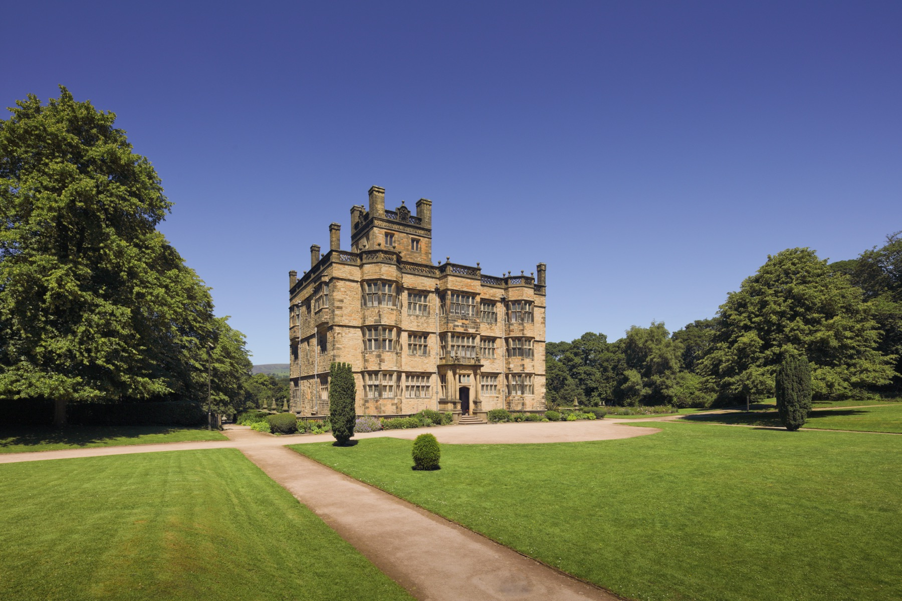

Forest of Bowland
Best treated as a scenic day, not a quick tick-box. Choose one route, one village or food stop, and do not overfill the drive.
 The Bungalow Burnley
The Bungalow Burnley
Day trips from Burnley
A week at The Bungalow gives enough time for Bowland, Pendle, Ribble Valley stops and quieter East Lancashire routes without packing every day too tightly.
For longer stays
A three-night stay works for Burnley and Pendle. A week lets guests spread out: one bigger countryside drive, one heritage day, one proper local walk, one easy park day and enough quiet time for the bungalow to feel like a base rather than just a bed.
Best treated as a scenic day, not a quick tick-box. Choose one route, one village or food stop, and do not overfill the drive.

Pendle works as a walking day, a scenic drive or a folklore-led local outing depending on the weather and energy level.

A neat half-day or relaxed full day when paired with food, a short walk or a drive through nearby countryside.

Save this for a longer stay. It gives guests another Lancashire texture: market town, castle views, food stops and a more rural pace.
Day-trip templates
A good day trip is usually one main destination plus one supporting stop. These templates help guests keep the day light without losing the feeling of getting out.
Pick a Bowland route, then choose one easy walk. End with a cafe or village stop instead of trying to squeeze in a second big destination.
Use a market town feel, then add one hall or museum stop. This plan works well when the forecast is uncertain.
Take the best light for a viewpoint, then keep the rest of the day calm. It is a strong plan for guests who want the scenery without a full walking day.
Best stay length
Minimum three nights makes sense for a short Burnley break. Seven nights is the better guest experience because it gives space for poor weather, slower mornings and a proper mix of countryside and heritage.
For most guests, one main destination per day is enough. Add food, a viewpoint or a short stroll only if the day still feels easy.
Keep it local too
Guests often enjoy a longer stay more when they mix day trips with proper local days. Towneley, the canal and Queen Street Mill help the trip feel rooted instead of just being a sequence of drives.